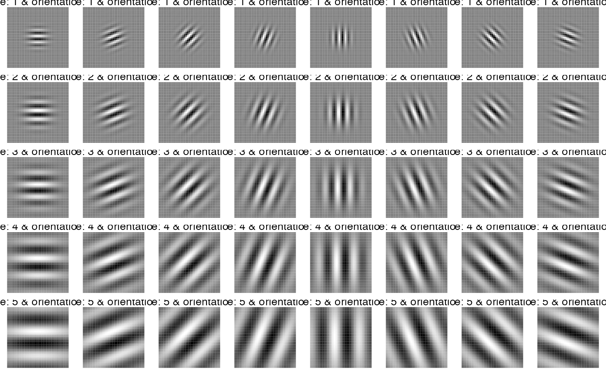
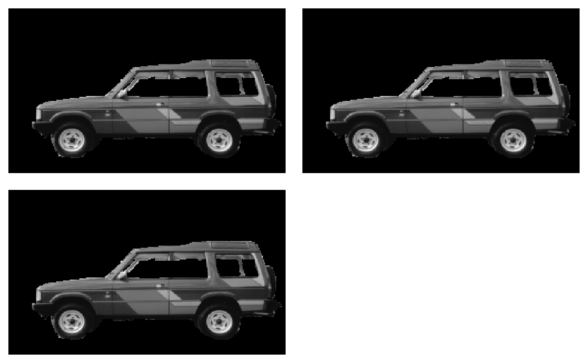

Gabor Feature Extraction
Gabor Feature Extraction
# init <- GaborFeatureExtract$new()
In case of an RGB image (3-dimensional) one can use the rgb_2gray() to convert the image to a 2-dimensional one
I added the option downsample_gabor to the original matlab code based on the following question on stackoverflow : https://stackoverflow.com/questions/49119991/feature-extraction-with-gabor-filters
GaborFeatureExtract$new()--------------gabor_filter_bank(scales, orientations, gabor_rows, gabor_columns, plot_data = FALSE)--------------gabor_feature_extraction(image, scales, orientations, gabor_rows, gabor_columns, downsample_gabor = FALSE, plot_data = FALSE,
downsample_rows = NULL, downsample_cols = NULL, normalize_features = FALSE, threads = 1, vectorize_magnitude = TRUE)--------------gabor_feature_engine(img_data, img_nrow, img_ncol, scales, orientations, gabor_rows, gabor_columns, downsample_gabor = FALSE,
downsample_rows = NULL, downsample_cols = NULL, normalize_features = FALSE, threads = 1, verbose = FALSE)--------------plot_gabor(real_matrices, margin_btw_plots = 0.15, thresholding = FALSE)--------------plot_multi_images(list_images, par_ROWS, par_COLS)--------------https://github.com/mhaghighat/gabor
https://stackoverflow.com/questions/20608458/gabor-feature-extraction
https://stackoverflow.com/questions/49119991/feature-extraction-with-gabor-filters
new()GaborFeatureExtract$new()
gabor_filter_bank()GaborFeatureExtract$gabor_filter_bank( scales, orientations, gabor_rows, gabor_columns, plot_data = FALSE )
scalesa numeric value. Number of scales (usually set to 5) ( gabor_filter_bank function )
orientationsa numeric value. Number of orientations (usually set to 8) ( gabor_filter_bank function )
gabor_rowsa numeric value. Number of rows of the 2-D Gabor filter (an odd integer number, usually set to 39 depending on the image size) ( gabor_filter_bank function )
gabor_columnsa numeric value. Number of columns of the 2-D Gabor filter (an odd integer number, usually set to 39 depending on the image size) ( gabor_filter_bank function )
plot_dataeither TRUE or FALSE. If TRUE then data needed for plotting will be returned ( gabor_filter_bank, gabor_feature_extraction functions )
gabor_feature_extraction()GaborFeatureExtract$gabor_feature_extraction( image, scales, orientations, gabor_rows, gabor_columns, downsample_gabor = FALSE, plot_data = FALSE, downsample_rows = NULL, downsample_cols = NULL, normalize_features = FALSE, threads = 1, verbose = FALSE, vectorize_magnitude = TRUE )
imagea 2-dimensional image of type matrix ( gabor_feature_extraction function )
scalesa numeric value. Number of scales (usually set to 5) ( gabor_filter_bank function )
orientationsa numeric value. Number of orientations (usually set to 8) ( gabor_filter_bank function )
gabor_rowsa numeric value. Number of rows of the 2-D Gabor filter (an odd integer number, usually set to 39 depending on the image size) ( gabor_filter_bank function )
gabor_columnsa numeric value. Number of columns of the 2-D Gabor filter (an odd integer number, usually set to 39 depending on the image size) ( gabor_filter_bank function )
downsample_gaboreither TRUE or FALSE. If TRUE then downsampling of data will take place. The downsample_rows and downsample_cols should be adjusted accordingly. Downsampling does not affect the output plots but the output gabor_features ( gabor_feature_extraction function )
plot_dataeither TRUE or FALSE. If TRUE then data needed for plotting will be returned ( gabor_filter_bank, gabor_feature_extraction functions )
downsample_rowseither NULL or a numeric value specifying the factor of downsampling along rows ( gabor_feature_extraction function )
downsample_colseither NULL or a numeric value specifying the factor of downsampling along columns ( gabor_feature_extraction function )
normalize_featureseither TRUE or FALSE. If TRUE then the output gabor-features will be normalized to zero mean and unit variance ( gabor_feature_extraction function )
threadsa numeric value specifying the number of threads to use ( gabor_feature_extraction function )
verboseeither TRUE or FALSE. If TRUE then information will be printed in the console ( gabor_feature_extraction, gabor_feature_engine functions )
vectorize_magnitudeeither TRUE or FALSE. If TRUE the computed magnitude feature will be returned in the form of a vector, otherwise it will be returned as a list of matrices ( gabor_feature_extraction function )
gabor_feature_engine()GaborFeatureExtract$gabor_feature_engine( img_data, img_nrow, img_ncol, scales, orientations, gabor_rows, gabor_columns, downsample_gabor = FALSE, downsample_rows = NULL, downsample_cols = NULL, normalize_features = FALSE, threads = 1, verbose = FALSE )
img_dataa numeric matrix specifying the input data (gabor_feature_engine function)
img_nrowan integer specifying the number of rows of the input matrix (gabor_feature_engine function)
img_ncolan integer specifying the number of columns of the input matrix (gabor_feature_engine function)
scalesa numeric value. Number of scales (usually set to 5) ( gabor_filter_bank function )
orientationsa numeric value. Number of orientations (usually set to 8) ( gabor_filter_bank function )
gabor_rowsa numeric value. Number of rows of the 2-D Gabor filter (an odd integer number, usually set to 39 depending on the image size) ( gabor_filter_bank function )
gabor_columnsa numeric value. Number of columns of the 2-D Gabor filter (an odd integer number, usually set to 39 depending on the image size) ( gabor_filter_bank function )
downsample_gaboreither TRUE or FALSE. If TRUE then downsampling of data will take place. The downsample_rows and downsample_cols should be adjusted accordingly. Downsampling does not affect the output plots but the output gabor_features ( gabor_feature_extraction function )
downsample_rowseither NULL or a numeric value specifying the factor of downsampling along rows ( gabor_feature_extraction function )
downsample_colseither NULL or a numeric value specifying the factor of downsampling along columns ( gabor_feature_extraction function )
normalize_featureseither TRUE or FALSE. If TRUE then the output gabor-features will be normalized to zero mean and unit variance ( gabor_feature_extraction function )
threadsa numeric value specifying the number of threads to use ( gabor_feature_extraction function )
verboseeither TRUE or FALSE. If TRUE then information will be printed in the console ( gabor_feature_extraction, gabor_feature_engine functions )
plot_gabor()GaborFeatureExtract$plot_gabor( real_matrices, margin_btw_plots = 0.65, thresholding = FALSE )
real_matricesa list of 3-dimensional arrays. These arrays correspond to the real part of the complex output matrices ( plot_gabor function )
margin_btw_plotsa float between 0.0 and 1.0 specifying the margin between the multiple output plots ( plot_gabor function )
thresholdingeither TRUE or FALSE. If TRUE then a threshold of 0.5 will be used to push values above 0.5 to 1.0 ( similar to otsu-thresholding ) ( plot_gabor function )
plot_multi_images()GaborFeatureExtract$plot_multi_images(list_images, par_ROWS, par_COLS)
list_imagesa list containing the images to plot ( plot_multi_images function )
par_ROWSa numeric value specifying the number of rows of the plot-grid ( plot_multi_images function )
par_COLSa numeric value specifying the number of columns of the plot-grid ( plot_multi_images function )
clone()The objects of this class are cloneable with this method.
GaborFeatureExtract$clone(deep = FALSE)
deepWhether to make a deep clone.
library(OpenImageR) init_gb = GaborFeatureExtract$new() # gabor-filter-bank #------------------ gb_f = init_gb$gabor_filter_bank(scales = 5, orientations = 8, gabor_rows = 39, gabor_columns = 39, plot_data = TRUE) # plot gabor-filter-bank #----------------------- plt_f = init_gb$plot_gabor(real_matrices = gb_f$gabor_real, margin_btw_plots = 0.65, thresholding = FALSE)# read image #----------- pth_im = system.file("tmp_images", "car.png", package = "OpenImageR") im = readImage(pth_im) * 255 # gabor-feature-extract #---------------------- # gb_im = init_gb$gabor_feature_extraction(image = im, scales = 5, orientations = 8, # downsample_gabor = TRUE, downsample_rows = 3, # downsample_cols = 3, gabor_rows = 39, gabor_columns = 39, # plot_data = TRUE, normalize_features = FALSE, # threads = 6) # plot real data of gabor-feature-extract #---------------------------------------- # plt_im = init_gb$plot_gabor(real_matrices = gb_im$gabor_features_real, margin_btw_plots = 0.65, # thresholding = FALSE) # feature generation for a matrix of images (such as the mnist data set) #----------------------------------------------------------------------- ROWS = 13; COLS = 13; SCAL = 3; ORIEN = 5; nrow_mt = 500; im_width = 12; im_height = 15 set.seed(1) im_mt = matrix(sample(1:255, nrow_mt * im_width * im_height, replace = TRUE), nrow = nrow_mt, ncol = im_width * im_height) # gb_ex = init_gb$gabor_feature_engine(img_data = im_mt, img_nrow = im_width, img_ncol = im_height, # scales = SCAL, orientations = ORIEN, gabor_rows = ROWS, # gabor_columns = COLS, downsample_gabor = FALSE, # downsample_rows = NULL, downsample_cols = NULL, # normalize_features = TRUE, threads = 1, verbose = FALSE) # plot of multiple image in same figure #--------------------------------------- list_images = list(im, im, im) plt_multi = init_gb$plot_multi_images(list_images, par_ROWS = 2, par_COLS = 2)